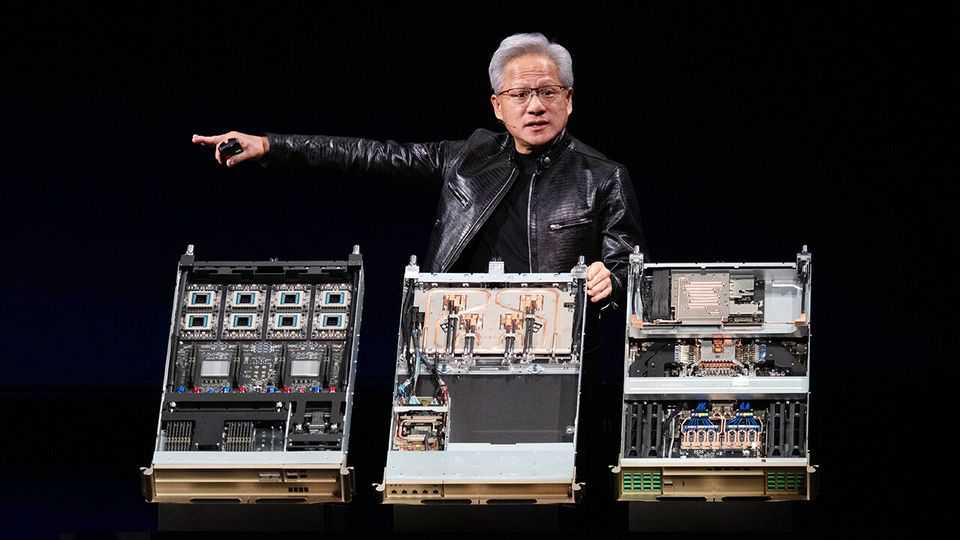
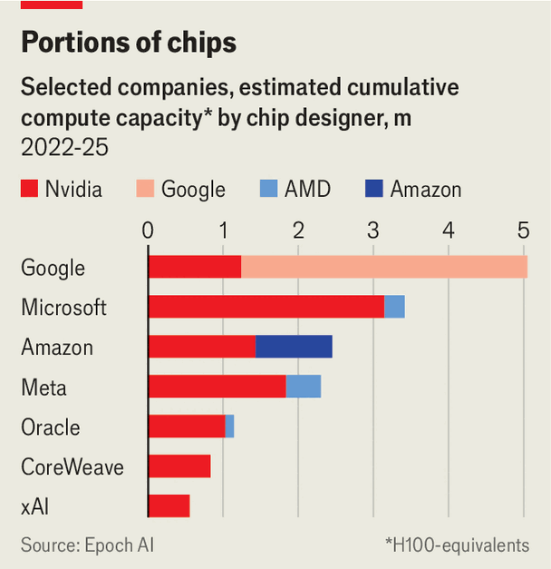

Nvidia’s great silicon showdown
The chipmaker’s biggest customers want a piece of its business. It is fighting back with a $500bn deal

Aug 13th 2026
The relationship between Nvidia and the hyperscalers—cloud giants such as Amazon, Google, Meta and Microsoft—used to be straightforward. Nvidia designed and supplied chips; the hyperscalers built data centres using them. For now, the two sides still need one another (see chart). Yet both are preparing for a future in which they lean on each other less.

A sign of impending separation came on August 10th, when Nvidia announced a partnership with six of Wall Street’s biggest investors, including BlackRock and Goldman Sachs, to “mobilise over $500bn” for ai infrastructure. The aim is to help customers, such as smaller ai labs and businesses that face steeper borrowing costs than Google or Microsoft, to find the vast sums needed to build data centres. Under the plan, the consortium will raise pools of capital from institutional investors and lend it to Nvidia's customers at attractive rates to build infrastructure using Nvidia's gear. Infrastructure is expensive: a large data centre costs around $50bn. Most firms do not need anywhere near that scale, but the cost is steep regardless.
Nvidia's approach is to use compute as collateral, allowing institutional investors to take part. One challenge is that processors have a shelf life, typically four to five years, which complicates valuing loans made against them. Another is what happens to the infrastructure if demand fails to materialise. Nvidia's response is to backstop as much as a quarter of a project's cost through a mechanism which keeps the company on the hook if the asset backing the loan falls below a certain value. It is ingenious financial engineering from a firm better known for the technical kind.
Such moves are prompted, in part, by unmistakable signs that Nvidia's core customers are drifting away. The hyperscalers are no longer content only to buy Nvidia’s chips and are spending billions on designing their own. Google has for years rented access to tensor processing units (tpus), specialised ai chips, through its cloud. Now it is selling tpu systems to other firms. Amazon puts the annualised revenue of its custom-chip business, mostly tied to ai, at $25bn. Andy Jassy, the company’s boss, reckons that makes it one of the world’s three biggest data-centre chip businesses. Microsoft and Meta have also developed chips. Anthropic and Openai, two big ai labs, plan to do the same.
Hyperscalers have good reasons to design their own silicon. Chips account for much of the cost of an ai data centre. Bernstein, a broker, estimates that in a server rack running Nvidia’s h100 chips, priced at $25,000 apiece, spending on chips makes up three-quarters of the total cost. Custom silicon is a fifth to a third as expensive, though less powerful. The cloud giants argue that they still get more computing power per dollar. Custom chips are also better suited to particular jobs: Google’s tpus for calculations underpinning its ai models, for example, and Meta’s processors for recommendation algorithms.
Some hyperscalers think custom silicon will become a big business in its own right. In May Google teamed up with Blackstone, a private-equity giant, to establish an ai cloud firm that will rent out computing power built on Google’s chips. Amazon plans a similar venture. Anthropic and Openai intend to use Amazon’s Trainium processors. Such moves could turn custom silicon into a formidable competitor to Nvidia’s chips. Bloomberg Intelligence, a research firm, estimates that ai-chip shipments worldwide will grow from around 15m units this year to 28m by 2030. Custom chips will make up 49% of the total, with Nvidia responsible for 40%. Nvidia will probably remain dominant by revenue—but cheaper custom silicon will put pressure on its fat margins.
Nvidia sees things differently. Jensen Huang, its boss, argues that custom silicon’s greatest strength—specialisation—is also its weakness: it is good for known workloads, not new ones. Nvidia’s gpus, by contrast, can handle almost any ai task. As ai spreads beyond large language models into robotics, autonomous vehicles and industrial applications, that versatility could matter more.
Keeping up with Nvidia may also prove expensive and difficult. It now releases breakthrough chips every year, up from every two. Designing a frontier ai chip typically takes other firms two to three years and costs $1bn-3bn. Nvidia spent over $6bn on r&d in the last quarter alone. Few firms have the capital and engineering talent to sustain such an effort. Nvidia also benefits from making its own chips. Firms that turn others’ designs into the finished product, such as tsmc, the Taiwanese chipmaker, have limited capacity. Cloud companies, says Vivek Arya of Bank of America, have to decide whether to use that “precious allocation” for their own needs or those of customers.
As well as defending its position against hyperscalers, Nvidia hopes to encourage other business. It wants to sell to governments trying to build domestic ai infrastructure, firms building their own data centres and “neocloud” firms that rent out ai computing power.
The new partnership with Wall Street is part of a broader strategy to help customers finance ai investments. In July Nvidia launched a programme to rent unused computing capacity from neoclouds in exchange for a share of future revenues to make it easier for them to borrow and expand. It is also said to be discussing a $350bn scheme to help Openai lease a data centre in Ohio and buy gpus. Nvidia is sensitive to allegations that its deals amount to "circular financing". It says the latest structure, by including outside investors, aims to address those concerns.
The line between financier and supplier, and that between customer and competitor, have been blurred. But everyone is buying computing power wherever they can find it. Nvidia still supplies the bulk. ■